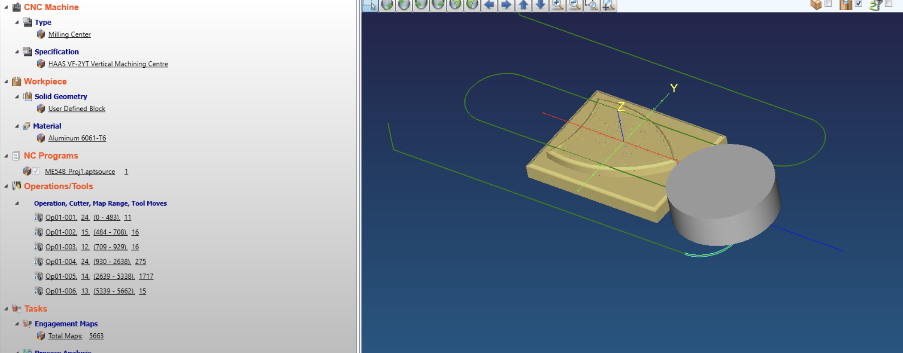
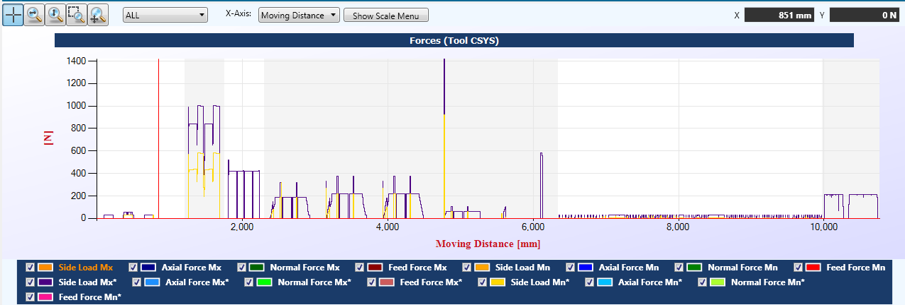
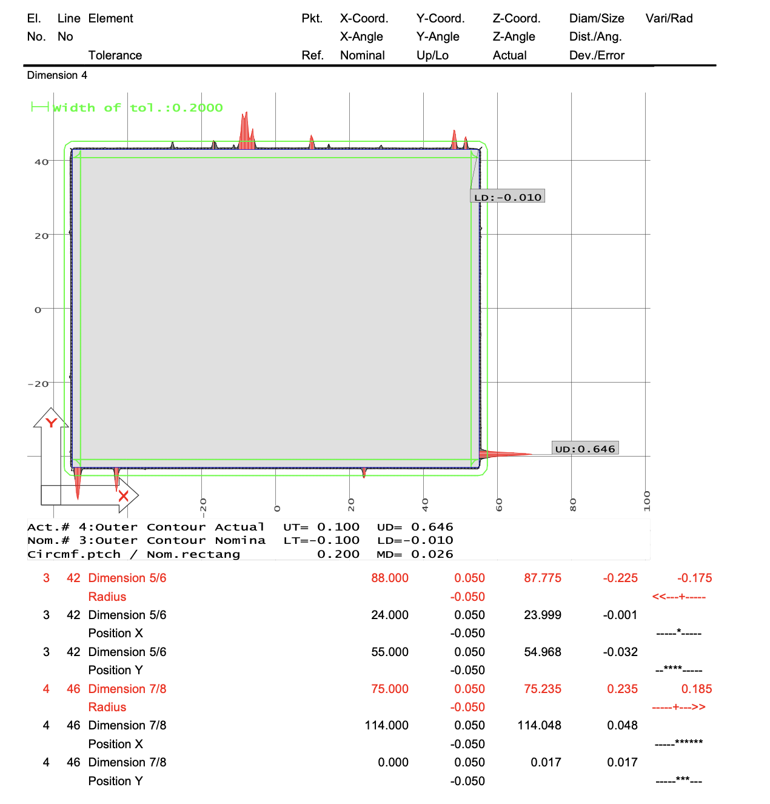
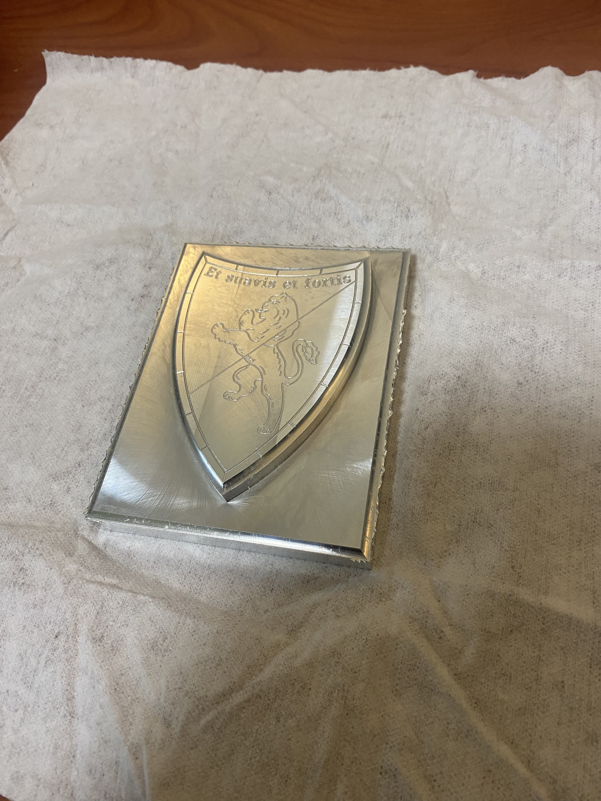

The CNC machined family crest shield project aimed to combine traditional craftsmanship with modern manufacturing techniques, producing a high-quality, detailed representation of a custom family crest. This project utilized advanced computer-aided manufacturing (CAM) and machining methods to create a finely detailed shield, which required precise toolpath programming, process optimization, and post-machining verification to ensure accuracy and quality.
Before initiating the design, I conducted thorough research on crest design principles and CNC machining constraints, focusing on how intricate details such as curves, textures, and reliefs could be effectively translated from a digital model into a physical product. I explored material properties and machining techniques to ensure the chosen material could be accurately milled while maintaining the fidelity of the design. Additionally, research was done on optimizing CNC operations to minimize machining time while maintaining surface finish quality.
The design phase involved creating the 3D model of the family crest using CAD software, followed by CAM programming in Mastercam to generate the toolpaths necessary for CNC machining.
To create the CAM program for the family crest shield in Mastercam, I imported the 3D CAD model and defined the material stock and coordinate system. I selected appropriate tools, such as flat and ball end mills, for roughing and finishing the intricate details. Using adaptive clearing strategies, I optimized material removal and reduced cycle time, while multi-axis toolpaths ensured precision for complex contours and reliefs. After generating and simulating the toolpaths to verify the program, I exported the G-code, optimizing feed rates, spindle speeds, and cutting depths for the material and tool life.
The toolpaths were optimized using Machpro, focusing on minimizing machining time and ensuring that cutting speeds and feeds were appropriate for the material and the complexity of the design. Special attention was given to the fine details of the crest, requiring a combination of roughing and finishing passes to maintain precision without compromising surface finish. 
After the machining process, a CMM (Coordinate Measuring Machine) was used for dimensional tolerance checks to ensure the shield met the required specifications. This step was critical in verifying the accuracy of the machined features, especially for intricate elements such as fine reliefs and shallow details on the shield.
The CNC machining process successfully produced a family crest shield that met both aesthetic and dimensional requirements. The optimized toolpaths significantly reduced the overall machining time without sacrificing precision, while the CMM analysis confirmed that all key features were within tolerance. The final piece showcased sharp detailing and smooth surfaces, reflecting the accuracy of the CAM programming and machining process.
In the tolerance verification process using a CMM, precise measurements of the machined shield were taken to ensure all features adhered to the specified tolerances. The CMM checks dimensions such as depths, radii, and surface profiles, providing data on whether the part meets the design intent. If burrs are present on the part, the CMM might detect inconsistent or exaggerated measurements at the edges or fine details (which can be seen below), as burrs can interfere with the probe's contact, leading to skewed data or false high spots. In this case, burrs were created because conventional milling was used for the scallops. By using climb milling, this could have been avoided.
This project highlighted the importance of combining CAM programming expertise with process optimization and precision measurement in CNC manufacturing. By leveraging Mastercam for toolpath generation, Machpro for optimization, and CMM for tolerance verification, I was able to achieve a high-quality result that met both design and manufacturing standards. The project reinforced the value of detailed planning, iterative optimization, and rigorous quality control in creating intricate machined components.
